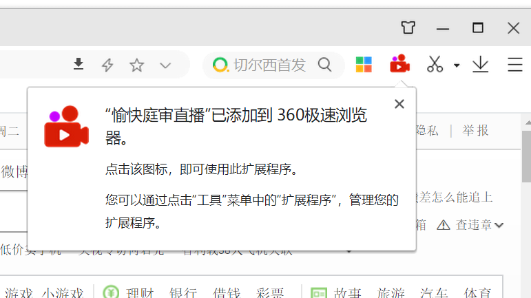

如果没有下载360极速浏览器的电脑，访问https://browser.360.cn/ee/ 下载安装。
[点击此处]下载扩展（名称360_tingshen.crx）。
对下载好的文件点击按住鼠标，拖入360浏览器中，出现提示框，点击“添加”，即可完成安装
安装成功后如下图所示

如有需要更新版本、功能，[点击此处]下载扩展（名称360_tingshen.crx）。按[二、安装扩展]的步骤重新安装即可。
 360等国产浏览器安装扩展
360等国产浏览器安装扩展